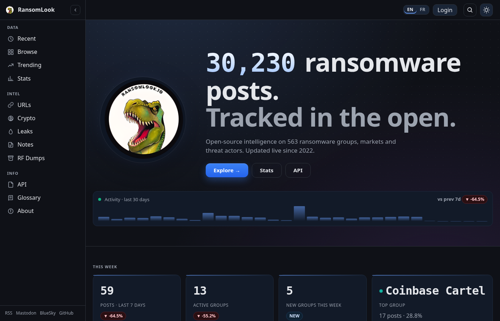
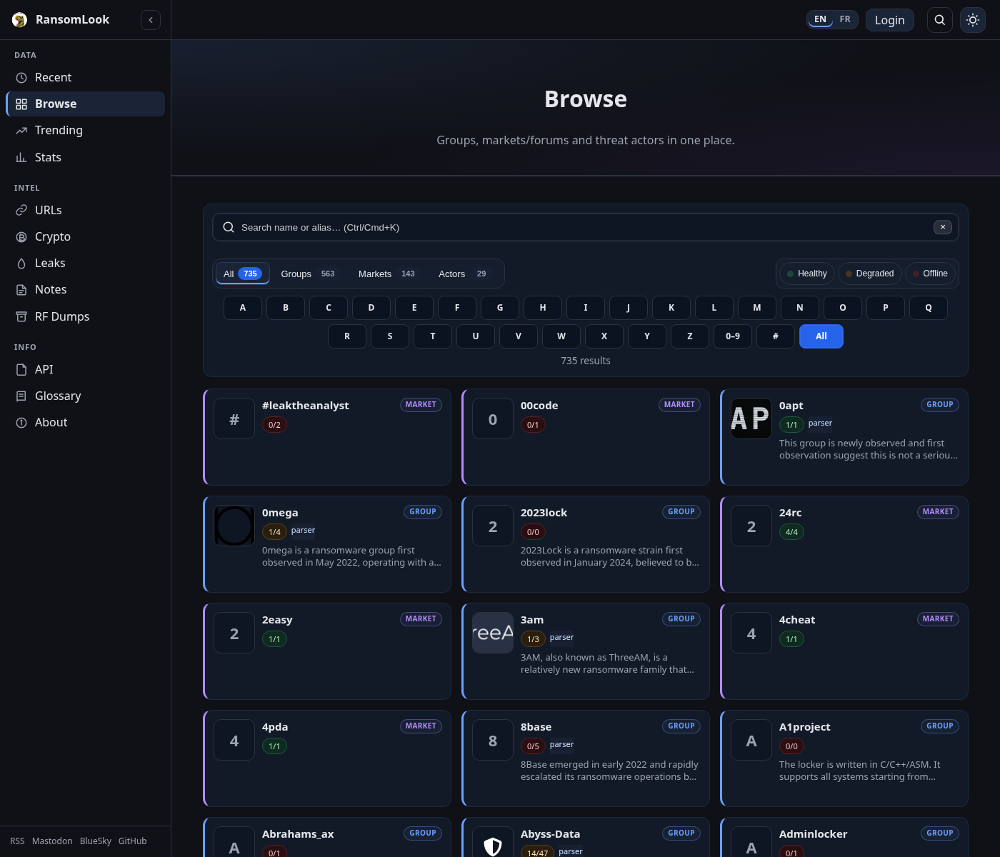
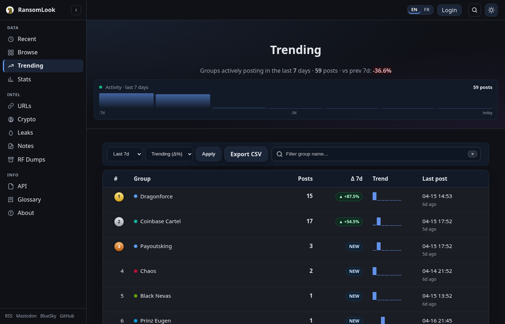
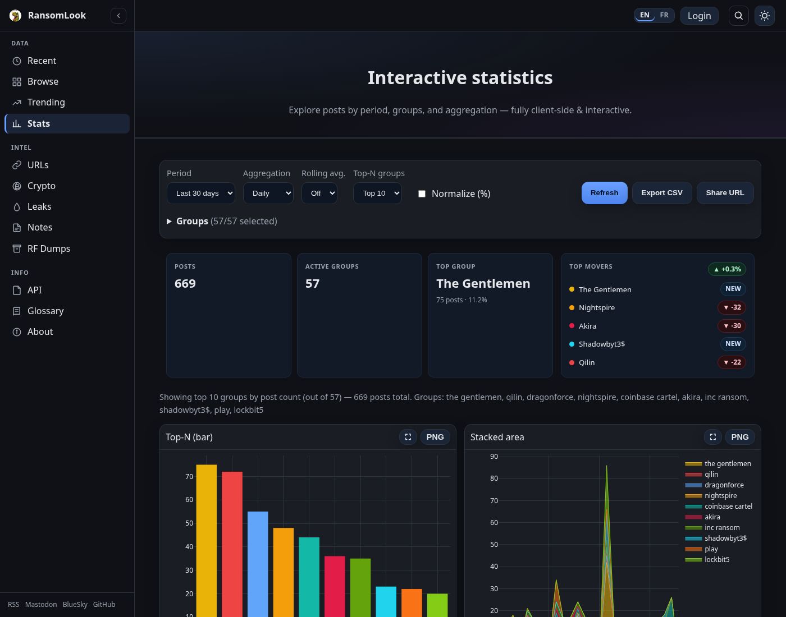
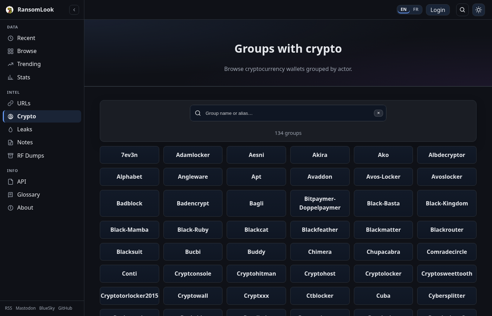
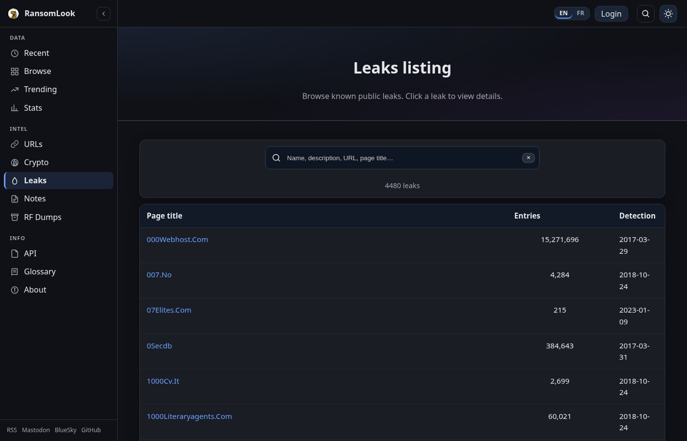
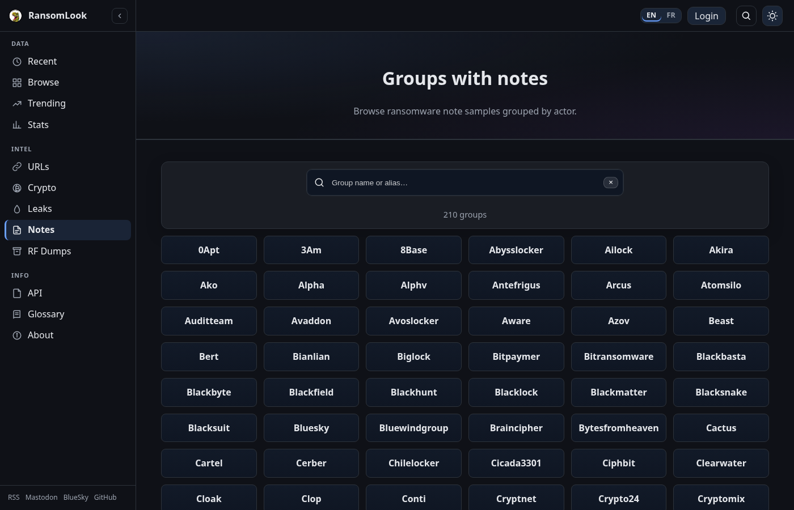

Web interface#
This page gives an overview of every public-facing page of a RansomLook instance. All pages are available on the official public instance at https://www.ransomlook.io.
Navigation is organised in three groups in the sidebar:
Data — Recent, Browse, Trending, Stats
Intel — URLs, Crypto, Leaks, Notes, RF Dumps
Info — API, Glossary, About
Homepage (/)#
{kind=link}

The landing page summarises live activity:
Recent posts (/recent)#

Flat chronological listing of victim posts across every tracked group.
Time window selector —
1 / 3 / 7 / 30 days. Default window: 3 days.Hard cap at 2000 rows per window. When exceeded, a notice shows how many rows were trimmed.
Live filters: free-text search (title + group name) and a per-group dropdown.
24-hour sparkline of posting activity in the hero.
Browse (/browse)#
{kind=link}

Card grid of every tracked entity — ransomware groups, markets/forums and threat actors.
Tabs to switch between All / Groups / Markets / Actors.
Health chips (Healthy / Degraded / Offline) filter entities by mirror availability.
Alphabet bar (A-Z / 0-9 / #) and live name/alias search.
Each card exposes parser status, private flag, wanted-listing flag, alias count.
URLs (/urls)#

Flat view of every tracked mirror URL for groups and markets. Useful for IR teams checking if an observed URL matches a tracked mirror.
Filters: entity type (All / Groups / Markets), availability (All / Online / Offline), live text search matching both entity name and URL substring.
One row per mirror — shows the entity, the full URL, live status, last scrape date, 30-day uptime and a 30-day health sparkline.
CSV export (
/urls.csv) respects the active filters.Respects privacy: private entities and private URLs are hidden to anonymous visitors.
Trending (/hot)#
{kind=link}

Ranks groups by posting activity over a configurable window (1/3/7/14/30/90 days).
Sort modes: Trending (Δ%), Volume, New entrants.
CSV export of the ranked list.
Per-row sparkline showing the daily post distribution inside the window.
Stats (/stats)#
{kind=link}

Interactive charts (Plotly) covering posts across time.
Controls: time period (7/14/30/90 days or custom range), hourly/daily/weekly aggregation, optional rolling average (3/7/14), Top-N group filter (5/10/20/all), percentage normalisation.
Three charts: Top-N bar, stacked area, timeline scatter. PNG export available on each.
CSV export of the filtered dataset, share URL to reproduce a given view.
Compare (/compare)#

Side-by-side comparison of two entities (groups or markets/forums).
Posts over 7d/30d/365d, mirrors up, 30-day uptime, Captcha and RaaS flags.
Live charts: post volume bars + mirror availability gauges.
Crypto (/crypto)#
{kind=link}

Cryptocurrency wallets grouped by actor.
Chip grid with live filter by name / alias.
Per-group detail page (
/crypto/<name>) lists observed wallets by blockchain, each with their transactions, filter controls (date range, min/max amount, direction) and Breadcrumbs integration for supported chains.CSV export per wallet and per group.
Leaks (/leaks)#
{kind=link}

Public leak databases tracked for enrichment. Search by name/description/URL/title. Each entry opens a modal with size, record count, indexing date and schema columns.
Notes (/notes)#
{kind=link}

Ransom note samples grouped by actor. Detail page (/notes/<group>) lists every note
with content and a Copy action.
RF Dumps (/RF)#
Optional Recorded Future integration. Available when an API key is configured in
config/generic.json. Lists retrieved dumps with description and download date; modal
view shows breach metadata.
Entity detail pages#
Group (/group/<name>)#
Hero with logo, quick stats (total posts, posts over 7d/30d, 30-day uptime average).
Activity sparkline (30 days), Plotly time chart.
Contact details (PGP, Matrix, Telegram, Tox, Session, Simplex, Max, Sonar, mail, Jabber).
Mirror listings split by role (URLs / File servers / Chat / Admin) each showing status, screenshot thumb, 30-day uptime and a health sparkline.
Affiliates list (linked to actor pages when known).
CSV export for URLs and posts.
Market / Forum (/market/<name>)#
Same layout as group pages but sourced from the market database.
Actor (/actor/<name>)#
Hero with aliases, WANTED banner linking to FBI / Europol / INTERPOL notices when applicable.
Relation graph (cytoscape) showing linked groups, markets and peer actors.
Personal information, contacts, sources and image gallery with lightbox.
Glossary (/glossary)#

Reference page defining terminology used throughout RansomLook: groups, actors, infrastructure types (DLS, FS, Chat, Admin, Relay), data metrics, ecosystem and relationships.
About (/about)#

Project overview with sections:
What is RansomLook / main components
Who uses RansomLook (SOC, CTI, CSIRT, research, journalism)
Getting started (entry-point per use case)
Data freshness policy
License (AGPL v3), API license (CC BY 4.0)
Credits and external data sources
Feeds and automation#
RSS feed#
A /rss.xml feed exposes the most recent posts. The sidebar footer exposes a
direct link next to the social icons.
API#
Swagger documentation is served at /doc/. See API for details.
Language switcher#
Every page can be rendered in English or French. The switcher lives in the top bar
(EN / FR). The active locale is persisted in a cookie (locale) for one year.
When no cookie is set, the locale is picked from the browser’s Accept-Language header,
defaulting to English.
See Internationalization (i18n) for contributing new translations.